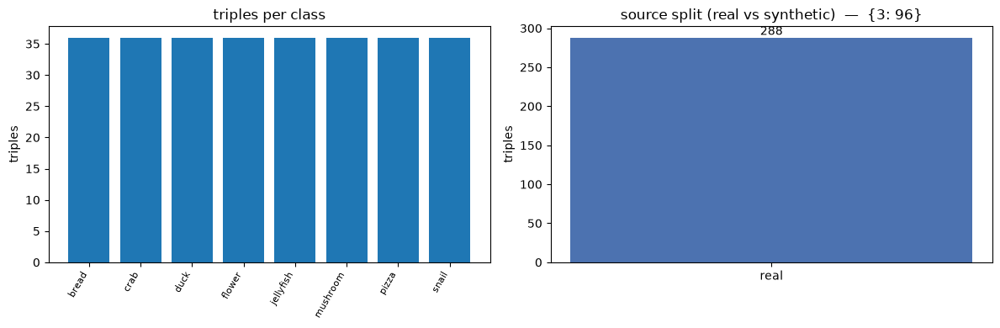
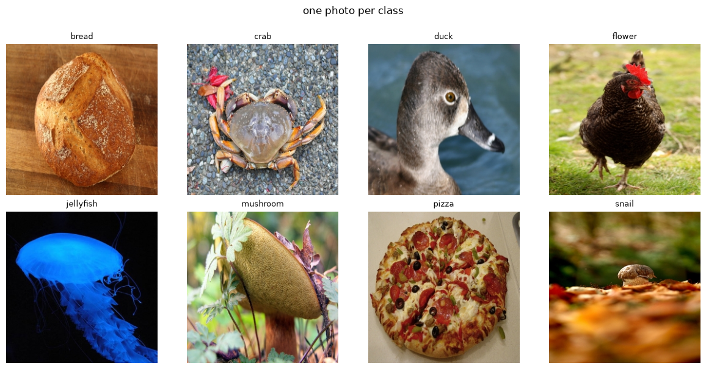
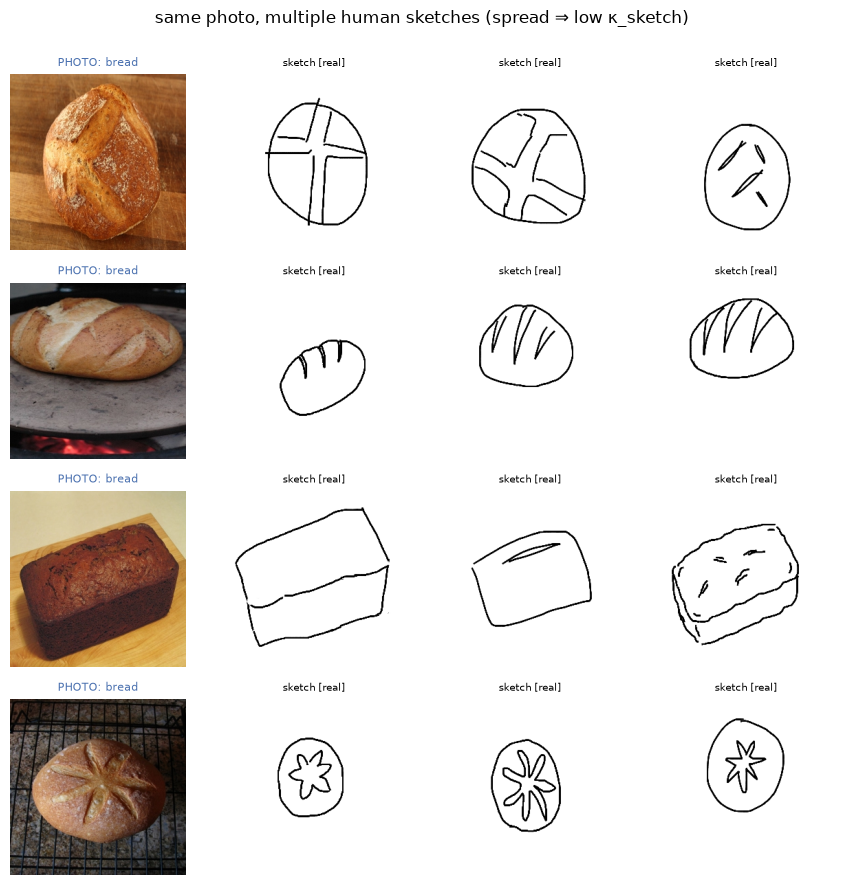

00 — Exploratory Data Analysis: browse the trimodal datasets
A no-training, no-GPU notebook to browse the sketch–photo–text data before modeling. It resolves whichever dataset the config selects (real Sketchy tree → Hugging Face mirror justpers/sketchy → procedural mock; see paper.md §3 and A2), then shows:
dataset composition — triples, instances, classes, source split (real vs synthetic), and the sketches-per-instance histogram that decides whether per-instance κ is estimable (paper.md §3.3);
a class grid — one photo per class;
multi-sketch spreads — several human sketches of the same photo, which is the visual intuition behind κ_sketch (abstraction variance);
caption inspection — the (pseudo-)text per instance and the class label parsed from it.
CLI:python run.py EDA (see run.py). Nothing here trains; it just reads data/.
%matplotlib inline# ============================ CONFIG ============================# Edit here, or override headlessly: python run.py 00 --set steps=200 dataset=mock# All keys + defaults live in lib/config.py; TRIMODAL_* env vars override them.import sys, pathlib_p = pathlib.Path.cwd()ifnot (_p /"lib").exists() and (_p /"trimodal-loss"/"lib").exists(): _p = _p /"trimodal-loss"# allow launching jupyter from the repo rootsys.path.insert(0, str(_p))from lib.config import get_configfrom lib.run_utils import new_run_dirNOTEBOOK ="00_EDA"CONFIG = get_config() # e.g. get_config(dataset="mock", backbone="toy")RUN_DIR = new_run_dir(NOTEBOOK) # every run gets its own results folderprint("run dir:", RUN_DIR)for k, v insorted(CONFIG.items()):print(f" {k:26s}{v}")
# Resolve the dataset (download-or-mock) WITHOUT building a modelfrom lib.data import prepare_triples, split_triples, summarize_triplesimport jsontriples, ds_name = prepare_triples(CONFIG)train_t, test_t = split_triples(triples)summary = summarize_triples(triples)print(f"dataset resolved to: {ds_name}\n")print(json.dumps({k: v for k, v in summary.items()if k notin ("per_class", "instances_per_class")}, indent=2))print("\ntrain/test split:", len(train_t), "/", len(test_t))
[data] using Sketchy HF mirror (justpers/sketchy) at C:\Users\soura\Code\2026\trimodal-loss\data\sketchy_hf — real human sketches, GENERATED captions (pseudo-text)
dataset resolved to: sketchy-hf
{
"n_triples": 288,
"n_instances": 96,
"n_classes": 8,
"per_source": {
"real": 288
},
"sketches_per_instance_hist": {
"3": 96
}
}
train/test split: 183 / 105
1. Composition — per-class counts and the source split
import matplotlib.pyplot as pltfig, ax = plt.subplots(1, 2, figsize=(12, 4))pc = summary["per_class"]ax[0].bar(range(len(pc)), list(pc.values()))ax[0].set_xticks(range(len(pc))); ax[0].set_xticklabels(list(pc), rotation=60, ha="right", fontsize=8)ax[0].set(title="triples per class", ylabel="triples")src = summary["per_source"]ax[1].bar(list(src), list(src.values()), color=["#4c72b0", "#dd8452"])ax[1].set(title=f"source split (real vs synthetic) — {summary['sketches_per_instance_hist']}", ylabel="triples")for i, (k, v) inenumerate(src.items()): ax[1].text(i, v, str(v), ha="center", va="bottom")fig.tight_layout(); fig.savefig(RUN_DIR /"eda_composition.png", dpi=110); plt.show()print("sketches-per-instance histogram:", summary["sketches_per_instance_hist"])print("-> per-instance κ is well-posed only where an instance has >=3 sketches (paper.md §3.3)")

sketches-per-instance histogram: {3: 96}
-> per-instance κ is well-posed only where an instance has >=3 sketches (paper.md §3.3)
2. Class grid — one representative photo per class
from PIL import Imageby_class = {}for t in triples: by_class.setdefault(t.class_name, t)classes =list(by_class)cols =4; rows = (len(classes) + cols -1) // colsfig, axes = plt.subplots(rows, cols, figsize=(3* cols, 3* rows))for ax, cls inzip(axes.flat, classes): ax.imshow(Image.open(by_class[cls].photo_path)); ax.set_title(cls, fontsize=9); ax.axis("off")for ax in axes.flat[len(classes):]: ax.axis("off")fig.suptitle("one photo per class", y=1.0); fig.tight_layout()fig.savefig(RUN_DIR /"eda_class_grid.png", dpi=110); plt.show()

3. Multi-sketch spreads — abstraction variance within one instance
The visual intuition for the vMF framing: several people sketch the same photo differently. Wider spread ⇒ lower κ_sketch. We pick instances that have the most sketches and show the photo alongside all its sketches.
from collections import defaultdictfrom PIL import Imagegroups = defaultdict(list)for t in triples: groups[t.instance_id].append(t)multi =sorted(groups.values(), key=lambda g: -len(g))[:4] # 4 most-sketched instancesmaxk =max(len(g) for g in multi)fig, axes = plt.subplots(len(multi), maxk +1, figsize=(2.2* (maxk +1), 2.2*len(multi)))iflen(multi) ==1: axes = axes.reshape(1, -1)for r, g inenumerate(multi): axes[r, 0].imshow(Image.open(g[0].photo_path)) axes[r, 0].set_title(f"PHOTO: {g[0].class_name}", fontsize=8, color="#4c72b0"); axes[r, 0].axis("off")for c inrange(1, maxk +1): axes[r, c].axis("off")if c -1<len(g): axes[r, c].imshow(Image.open(g[c -1].sketch_path)) axes[r, c].set_title(f"sketch [{g[c-1].source}]", fontsize=7)fig.suptitle("same photo, multiple human sketches (spread ⇒ low κ_sketch)", y=1.0)fig.tight_layout(); fig.savefig(RUN_DIR /"eda_multisketch.png", dpi=110); plt.show()

4. Captions & parsed class labels (pseudo-text — paper.md A1)
seen =set()print(f"{'class':16s} caption (pseudo-text)")print("-"*80)for t in triples:if t.class_name notin seen: seen.add(t.class_name)print(f"{t.class_name:16s}{t.caption[:60]}")print("\nNOTE: on the HF mirror these captions are GENERATED (BLIP-style) and the class")print("label is parsed from them by a heuristic; on real Sketchy there are no captions at")print("all and text is a class prompt. Either way text on Sketchy is pseudo-text (A1).")
class caption (pseudo-text)
--------------------------------------------------------------------------------
bread a close up of a loaf of bread on a wooden table
crab a close up of a crab on the ground with leaves
duck there is a duck that is swimming in the water
flower araffe standing on the grass in a field with a red flower
jellyfish jellyfish in the dark with a blue glow on its face
mushroom there is a mushroom that is growing out of the ground
pizza there is a pizza with pepperoni, olives, and cheese on it
snail there is a snail that is sitting on the ground in the leaves
NOTE: on the HF mirror these captions are GENERATED (BLIP-style) and the class
label is parsed from them by a heuristic; on real Sketchy there are no captions at
all and text is a class prompt. Either way text on Sketchy is pseudo-text (A1).